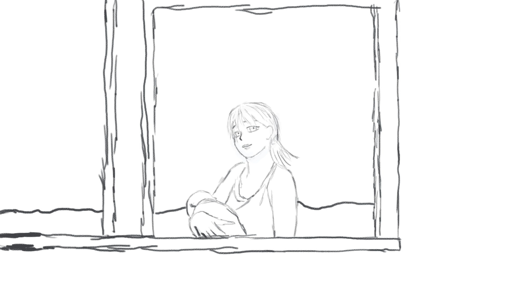

Рассказывайте Ваши истории об обнаружении этого мода и эмоциях от прохождения первого рута.
Также указывайте платформу (1.1, 1.2, Steam, Android), на которой Вы играете, и приблизительную дату первого прохождения.
Как Вы попали в мод 7ДЛ?
Сообщений 1 страница 30 из 64
Опрос
| Как Вы попали в мод 7ДЛ? | ||
| По совету друзей | 5% - 6 | |
| Нашли самостоятельно в Steam | 36% - 42 | |
| Увидели на стриме/летсплее | 6% - 7 | |
| Видели упоминания на имиджбордах, реакторах и т.д. | 10% - 12 | |
| Нашли через Everlastng Summer Wiki | 28% - 32 | |
| Читали предварительный сценарий на ficbook | 3% - 4 | |
| Другое | 9% - 11 | |
| Голосов: 114 | ||
Поделиться12016-01-24 03:25:47
- Мизантроп

- Откуда: Москва / Ташкент
- Зарегистрирован: 2015-10-21
- Сообщений: 890
- Последний визит:
Сегодня 18:28:46
Поделиться22016-01-24 03:37:21
- Мизантроп
- Откуда: Москва / Ташкент
- Зарегистрирован: 2015-10-21
- Сообщений: 890
- Последний визит:
Сегодня 18:28:46
Сразу запущу собственную историю.
Играл и играю только на версии 1.1.
Впервые попробовал мод в июне 2015 года. Наткнулся из-за летсплеера (после ваниллы хотелось увдеть эмоции людей, проходивших игру, и, так уж сложилось, что тот летсплеер показался мне весьма искренним).
Первым рутом в ванилле был рут Лены на гуд-энд. Затянуло меня в мир БЛ после сцены "Похвалить книгу", в которой слишком большая отсылка к моей собственной жизни. Какое-то время даже зарекался проходить другие руты, но не удержался.
Первым рутом в 7ДЛ стал рут Лены по ветке Локи.
Больше всего с первого прохождения помню свои реакции на предысторию Локи, отказ Лены пойти на осмотр лагеря в д.№2, сцену в клубе кибернетиков в д.№5 и ужас от наглотавшихся таблеток. В итоге, хорошая концовка всё равно вышла, но ощущение было крайне жутковатым - тихо материл себя за бездарное прохождение до самого момента чудесного спасения.
Отредактировано Dantiras (2016-01-24 09:10:16)
Поделиться32016-01-24 03:49:28
- Хикикомори

- Откуда: Тёплые пески Эльсвейра
- Зарегистрирован: 2015-10-30
- Сообщений: 186
- Последний визит:
2018-04-16 21:28:48
Откопал основу где-то в июле 2014-го. Прошёл, проникся.
Рыл моды после прохождения оригинала, случайно скачал 7DL и понеслось.
Первым пройденным рутом в основе была Алисочка, естессно. Выпал на бэд и рыдал, аки самка собаки.
Первый рут в моде... Да не было первого рута, тогда вообще полных рутов не было. Унылку читал в коде, ибо... Ибо, короче. Далее интересовали только первые три дня, так как погрузился во тьму рута кошочки.
А, Дантирас, возраст забыл в вопроснике! Чесс, 34 годика.
Поделиться42016-01-24 08:44:21
- Ньюфаг

- Зарегистрирован: 2015-11-05
- Сообщений: 4
- Последний визит:
Сегодня 17:18:34
В стиме нашел первоисточник, читал зимой-весной 2015-го. Одно из самых сильных впечатлений, к слову, произвел самый первый запуск игры с выходом в меню. Орды мурашек в тот вечер вытоптали мне всю спину.
Запускаю я, значит игру, а на меня после красивейшей фоновой заставки с летним пейзажем, дорогой и ЛЭП вдруг полилась мелодия заставившая что-то сжаться в горле. И это приветствие на стенде: "Дорогой пионер! Ты - на пороге удивительных открытий... Эта смена запомнится тебе на всю жизнь..." Я тогда минут пять втыкал в замечательно стилизованное меню и не нажимал "Начать игру", чтобы изучить его и дослушать атмосферный саунд до конца. А на калитке с надписью "Выход" буквами помельче "Осторожно бесконечность". И уже в этом месте нахлынули воспоминания о небольшом детском лагере, куда я ездил каждое лето по путевкам, которые выдавали маме на работе на нас с младшим братом. Сейчас этот лагерь стоит заброшенный в тайге, так как его давно уже перестали финансировать... Кажется действительно прошла целая вечность.
Так что это приветствие на стенде в меню с фоновой аранжировкой "Взвейтесь кострами" произвело на меня неизгладимое впечатление.
Преисполненный благостного датфила прошел оригинал (первой, кстати, тоже там была плохая концовка Алисы, хотя я вроде как приударял сначала за Леной, но потом опешил от ее яндерешности). В целом мне игра очень понравилась. Однако, все время не покидало ощущение, что большую часть работы по созданию тех самых чувств от новеллы выполнили потрясающие фоны и саундтрек, а сценарий до их уровня несколько не дотягивает.
В конце августа, после летнего отдыха я приехал обратно в Москву и мне захотелось снова вызвать эти чувства. Но перспектива читать ту же историю без изменений по третьему кругу как-то не прельщала. Тут-то я и обратил свое внимание на мастерскую модов в стиме. Особого доверия они у меня не вызывали, но и выбора, казалось, тоже не было. Отсортировав моды "С наивысшим рейтингом за все время", я наткнулся на 7ДЛ, гордо стоящий на первом месте.
Вздохнув, я запустил его и... через несколько минут игры понял, что оригинальная новелла должна была быть именно такой. История заиграла совершенно новыми красками, в ней появилась глубина и живость персонажей. Я словно с головой окунулся в эту жизнь.
Старался проходить без подсказок и с самого начала выбрал полюбившуюся мне с лета светловолосое синеглазое чудо, противоречащее не только устоявшемуся архетипу блондинок, но и чуть ли не всей современной женской сущности. Вышел на "Плюс-минус полчаса" и проклиная чертовых ниндзя, где-то режущих лук, минут пять шмыгал носом и утирал глаза, прокручивая в мыслях счастливую концовку, судьбу несчастного Шурика и его творение, тоскующее по создателю. Букет эмоций при первом прохождении получился - будь здоров.
Поделиться52016-01-24 10:00:57
- Вахаха!~

- Откуда: Санкт-Петербург
- Зарегистрирован: 2015-10-21
- Сообщений: 344
- Пол: Мужской
- Последний визит:
Сегодня 16:44:15
А где вариант опроса "написал сам"? (=
Поделиться62016-01-24 10:56:49
- Ньюфаг

- Зарегистрирован: 2015-10-24
- Сообщений: 2
- Последний визит:
2016-06-23 06:13:42
Весной прошлого года узнал про БЛ. Скачал значит в стиме, вроде все как у людей первая бэд алисы, датфил, месячный отход, проход всего БЛа вдоль и поперёк, влюбился в Леночку. Понял что её мне стало мало и стал шуршать по модам. На 7ДЛ наткнулся опять же в стиме, качал там всё подряд, в глаза сразу бросилось объёмность мода по сравнению с тем читал до этого. Дальше я понял всю тщетность оригинал и жизни до этого. Теперь с каждой крупной обновой беру два дня отгула на работе. Ах да играю до сих пор в стиме, видимо придётся переезжать на 1.1.
Поделиться72016-01-24 11:57:44
- Одиночка

- Зарегистрирован: 2015-10-25
- Сообщений: 98
- Последний визит:
2018-04-13 03:09:01
Я наткнулся на мод летом 2015 точнее в начале августа. Дало было так, я уезжал из дома, и подумал что надо что-нибудь собой прихватить (ибо железка туда куда я поехал слабая). Решил взять почитать Бесконечное лето, подумал почему нет? Так дело было в конце июля и по ночам мне все равно нечем было заняться туда куда уехал, поэтому ночью я садился и играл в Бл. За неделю прошел все руты и получил почти все концовки. Проходить было интересно эмоций было много, хотя я многое знал уже как пройти, ибо смотрел прохождения у одного товарища. Первой проходил Славю, потому что была единственная чье прохождение я не знал. Пройдя, как и у многих наверно у меня остались только положительные эмоции.
Чем привлекает лето? Ну здесь отличная музыка и рисовка (хотя последняя иногда проседает), и прекрасная атмосфера безмятежности этого лагеря. И нельзя не отметить, какую-то приторную сладость от всех происходящих событий (Каких-то сверх важных, опасных или крышосносящих действий не происходит, кроме ветки Мику и концовок). Да сюжета это абсолютная бездна, которая не выдерживает никакой критики: нелогичности, несостыковки, самый аморфный главный герой в истории (это можно даже считать своеобразным достижением, даже автор 7дл помню писал, что у него не получается из Дрыща сделать такую амебу, как в ваниле).
На мод же наткнулся уже в начале августа, когда вернулся домой. Я не спал весь день (просто не ложился) и где-то в часов 7 утра поставил в стиме Бесконечное лето и скачал мод. И проиграл в него весь день, идя по ветке Лены. Играть начал за Дрища, и стараюсь им сейчас все проходить по максимому. Мод тоже вызвал много эмоций, хоть я и не сумел вытянуть с первого раза на хорошую Ленину концовка. дальше я прошел много модов, но потом понял что круче 7дл пока в лето атмосфере ничего нет, это пик, который пока не оригинал, не другие моды не достигают. Сейчас играю не только на стиме но и на версию 1.1 стараюсь посмотреть, и прошел все крупные ветки, и стараюсь и сейчас следить за модом по возможности.
Отредактировано Red cap (2016-01-24 12:01:13)
Поделиться82016-01-24 12:53:58
Гоняю на 1.1.
Довольно долго отмахивался от всего, что так или иначе связано с анимешной визуализацией. Ваниллу летом 15-го посоветовал знакомый, сел же проходить только в сентябре. Если бы не саундтрек и все-таки приглянувшиеся мне стилистика и сеттинг, то первое прохождение вполне могло оказаться и последним, ведь попал я на сыча, а он, по сравнению с другими рутами, никакой. Далее: бэд Лисы, тихий звездец в голове и желание все исправить.
Мод нашел в предустановленном мод-паке тихим ноябрьским вечером. Первым в 7дл стал рут Слави. Эмоций было - масса: радость, грусть, ощущение собственной неполноценности и да, он, страх, нарастающий по мере приближения к финалу. Не ждал, что текст способен довести до такого (хотя, скорее-всего потому, что последние несколько лет в основном приходится читать сугубо техническую литературу). Как итог - "Плюс-минус полчаса СССР", на время отлегшее напряжение и стойкое намерение ознакомиться со всем, что есть в моде.
РФ-реджекты Алисы и Слави, такие похожие по сути, но, на мой взгляд, такие разные по настроению снова вывели ощущения на новый уровень, да чё уж там, рыдал я.
Очень порадовала работа над персонажем Мику, к которой я всегда относился с изрядной долей пренебрежения.
Отдельно хотелось бы выделить отличную работу с музыкой: от общей подборки до вызова/затуханий треков во время сцен (за знакомство с April Rain Автору отдельное спасибо).
Отредактировано Otsdarva (2016-01-24 12:56:35)
Поделиться92016-01-24 18:53:12
- Одиночка

- Зарегистрирован: 2016-01-02
- Сообщений: 90
- Последний визит:
2018-02-06 22:25:09
Рассказывать о ваниле даже не буду,скажу лишь то,что цель её существования заключалась в том,чтобы привлечь меня к 7 ДЛ,а автора побудить создать свое лето,с чем она и справилась успешно,я уже игру,собственно,называю не БЛ,а 7ДЛ.Начал в 7 ДЛ играть не так уж и давно где-то в середине-конце октября 2015,посоветовал друг,его мнение у меня на особом счету,так что я без особых сомнений прислушался и попробовал,а после ванила сразу вылетела из головы.Сразу же поехал на рут Слави,о чем не пожалел ни разу,в целом очень понравился сюжет,долго размышлял по поводу концовок,осталось много вопросов,до сих пор нерешенных,спасибо,что есть прыгалка и что мне не приходится каждый раз перелистывать текст,чтобы поработать над своей мыслью,да и вообще ближе к концу проникся сопереживанием к героям и к их отношениям(хотя вроде бы и заострено в этом руте внимание больше на сюжет,а значит рут удался),проходил без подсказок по прохождению,поэтому думал,что вышел на что-то грустное и Славя бросит Семена,просто-напросто не знал к чему все идет,вот именно поэтому не надо создавать гайды по прохождению,пускай люди сами проходят.Прошел из 7 ДЛ я пока далеко не все,но на данный момент самой сильно накаленной в эмоциональном плане концовкой для меня была "Моя Мику",точнее её драматическая часть,нагнала на меня такую тоску,очень тронула сама ситуация,отлично подобранная музыка,все это в сумме оказалось верным ключиком от моей души и меня пробило,я даже немного попла...нет,мужчины не плачут,а потом была эмоциональная разрядочка,эх жаль...я бы еще погрустил,поэтому жаль,что я вышел сперва на "Моя Мику",а не на с "Новым Счастьем".
У меня стоит две версии игры: 1.1 и стим версия,пользуюсь обеими,тем более в последнее время в стиме множество различных ошибок вылетало.Ах да,Инзаге тринацать.
И пока не забыл,спасибо Автору и всем тем кто работает над 7ДЛ за этот мод.
Поделиться102016-01-24 18:56:45
- Ньюфаг

- Откуда: Москва
- Зарегистрирован: 2015-10-26
- Сообщений: 29
- Пол: Мужской
- Возраст: 24 [1993-08-16]
- Последний визит:
Сегодня 13:55:28
Внесу свои пять копеек, хотя мое знакомство с модом случилось довольно банально - где-то весной дошли руки до БЛ, потому что чуть раньше начал знакомство с визуальными новеллами (первая была Катава, разумеется), прошел оригинал, очень понравился сеттинг, музыка и визуальная составляющая, текст тоже показался приятным, захотелось добавки, ну и пошел смотреть мастерскую в стиме. После 7дл понял, насколько не дотягивает оригинал, теперь именно 7дл считаю каноном и всем знакомым, кто хочет познакомиться с Летом, советую сразу приступать к чтению мода. Первым делом прошел рут Лены, впечатления были настолько сильными, что решил найти единомышленников хотя бы на просторах сети, поскольку в жизни, к сожалению, обсудить мод было не с кем, а эмоции просто переполняли и требовали выхода. Вот так где-то в середине июля я зарегистрировался на старом форуме, и с тех пор уже прочно держу руку на пульсе у мода 
Поделиться112016-01-24 19:55:49
- Ньюфаг

- Зарегистрирован: 2015-10-21
- Сообщений: 43
- Последний визит:
2017-03-24 20:34:36
А, тут тоже перепись?
На БЛ наткнулся на Лурке еще до выхода, периодически мониторил - вышло уже или затухло . Как выпустилось - прошел, испытал датфил. Полез копать дальше, нашел модпак, почитал, из всего что там тогда было больше всего торкнуло 7ДЛ с первыми 3 днями.
Залез на Вики, и как-то втянулся в болтологию, поиск багов, а потом и в писанину.
Поделиться122016-01-24 22:08:15
- Ньюфаг

- Зарегистрирован: 2015-10-27
- Сообщений: 4
- Пол: Мужской
- Возраст: 19 [1999-04-16]
- Skype: narutomang
- Последний визит:
Сегодня 16:23:46
Играю на Steam версии
На БЛ наткнулся на Лурке летом. Визуальные новеллы раньше не играл, поэтому решил посмотреть что да как. Первым рутом хотел выйти на Мику, но вышел сами знаете куда... Потом вышел на бед Лены, которая оставила неизгладимое впечатление. Ванильного сценария мне было мало, и я отправился на поиск модов. Сначала заглянул в мастерскую стима, где и обнаружил 7ДЛ. Первым рут в 7дл был гуд рут Лены все шло хорошо, хотя в 7-ом дне я немного прифигел, чутка обос... испугался, когда увидел наглотавшуюся таблетками Лену (в памяти все еще была сцена из плохой концовки), но, слава богу, все закончилось хорошо. При следующем прохождении решил попробовать пройти Мику. С тех пор я Микуфаг, лол.
Понравилось в моде то, что персонажи прописаны много детальнее чем в оригинале, да и сценарий куда лучше оригинала. Регался на старом форуме в августе, с тех пор тут и сижу.
Отредактировано narutomang (2016-01-24 22:11:12)
Поделиться132016-01-24 22:15:34
- Ньюфаг

- Откуда: Екб
- Зарегистрирован: 2015-11-01
- Сообщений: 44
- Пол: Мужской
- Возраст: 20 [1997-10-05]
- Skype: super-kun
- Последний визит:
Сегодня 14:46:32
Играю на 1.2. Стим.
Впервые поиграл в начале апреля.
Наткнулся чисто из-за хайпа и постоянного восклицания слова ЛЕТО в интернетиках. Совершенно не задумываясь, что это такое, я скачал и обнаружил ВНку. Ранее в ВНки никогда не играл - не интересует. Сел читать и понял, хм, интересно. Сразу вышел на Славя-гуд. Ушёл на неделю жить в местный парк и варить всё в себе. Что это было? Таков был единственный вопрос. Сознание улетело на звёзды. К лету вернулся только через месяц, желая узнать больше и больше. Датфил - легко сказать. Я бы сказал, что мир перевернулся на 180 градусов. После прохождения оригинала, будучи твердолобый Славявяфагом, который серьёзно так поехал и поплыл по какому-то спрайту. Я пошёл искать МОАР эбаут мисс Славя. Где живёт, что это такое, как оно работает, как найти, есть ли вообще, как жить дальше и кто вернёт мне мою голову? С этими вопросами я начал сёрфить моды один за другим в поисках ответов. Годных было немного, я скажу. Перерыл весь Двач, все форумы и треды, кто же? Как найти? Какие координаты? Как быть? Пока сёрфил моды нашёл 7ДЛ. Смотрю, текст просто вау, всё очень здорово, круче чем Лукашенко. Пошёл на Славя-рут естественно и тут... какое-то непотребство с возбудителями и играми под покрывалом на 2ом дне. Бомбануло. Отыскал форум и увидел... О, умный люди сидят, пишут классные вещи! Может у них есть ответ на мой вопрос? Следил я так за 7ДЛ месяц, присматривался, кто есть что. Потом понял, что я хочу помочь и влиться в эту компанию. Запилил текст, Арли сказал, что неплохо, ну так и поехало. Никогда не ощущал себя частью и винтиком чего-то, в чём мне было так хорошо! Здесь нашёл прекрасных людей, нашёл друзей, а так же получил фидбэк по себе и... О да! Ответы на свои вопросы, которые меня более чем удовлетворили.
Благодаря проницательности Автора, сэр смог понять всё, что я пытался передать через свой текст, как мне видится Славя. Так я и получил рут, о котором мог только мечтать, который просто затмевает оригинал. Мне разрешили поместить частичку себя в "Лето", а так же помочь в создании Слави, как личности, персоны, живого человека, настоящего.
Пожалуй, 7дл это самое крупное приключение в жизни, столько было работы, баталий, дискуссий, обсуждений. Всё хорошо, что хорошо кончается. Такая вот история.
Поделиться142016-01-25 00:21:26
- Ньюфаг

- Откуда: Россия
- Зарегистрирован: 2015-11-09
- Сообщений: 35
- Пол: Мужской
- Возраст: 24 [1993-12-07]
- Последний визит:
2018-04-16 16:21:11
Про БЛ узнал смотря херстоун сримы на твиче. Скачал в стиме. Сразу бросается в глаза красочные картинки и приятная музыка. Начал читать - гуд Лены. Понравилось. Прочитал всё - лучшая концовка, на мой взгляд, Лена-бэд. Про 7дл узнал опять же с твича. На первое прохождение выбрал дрища, а так, как Лена моя любимица и фаворитка (единственная, чьи концовки в бл вызывали какие-то эмоции) - читал её. Получил бэд. Понравилось. Перечитал её за локи - понравилось ещё больше. Взял герка и снова начал читать Лену - понравилось в очередной раз. Так и читаю. Хороший мод 
Поделиться152016-01-25 02:04:00
- Ньюфаг
- Зарегистрирован: 2015-11-05
- Сообщений: 4
- Последний визит:
Сегодня 17:18:34
Зуко написал(а):
...
Благодаря проницательности Автора, сэр смог понять всё, что я пытался передать через свой текст, как мне видится Славя. Так я и получил рут, о котором мог только мечтать, который просто затмевает оригинал. Мне разрешили поместить частичку себя в "Лето", а так же помочь в создании Слави, как личности, персоны, живого человека, настоящего.
...
Отдельная благодарность от славянофага.
Поделиться162016-01-25 06:43:03
- Ньюфаг
- Откуда: Екб
- Зарегистрирован: 2015-11-01
- Сообщений: 44
- Пол: Мужской
- Возраст: 20 [1997-10-05]
- Skype: super-kun
- Последний визит:
Сегодня 14:46:32
BolxB написал(а):
Отдельная благодарность от славянофага.
Да не за что, на самом деле. Тут уж Автору спасибо за то, что прислушался и всё понял, чему я сильно дивлюсь, ибо волну сэр поймал настолько легко. Вот это навык эмпирии)
Да, так что в 7ДЛ живёт именно та Славя, о которой мечтаю. Не зря столько времени инфу собирал и писал. Да и до сих пор пишу.
Поделиться172016-01-25 20:09:26
- Ньюфаг

- Зарегистрирован: 2015-10-21
- Сообщений: 43
- Пол: Мужской
- Возраст: 29 [1989-01-20]
- Последний визит:
2017-11-28 14:00:47
Играю на 1.1, уже наверное и не вспомню когда взялся за оригинал, больше полугода назад
На БЛ вышел после того как прочёл Катаву, точнее, уже тогда знал про БЛ, но отнёсся скептически к тому что она отечественная, но когда взялся, увяз покуда не прошёл всю её, начав с бэда сыча, затем бэда Алисы, и так далее. Как ни неприятно осозновать, с историей Семёна кое-что роднит. Дальше - больше, полез за модами, прочёл пару мелких, попробовал Саманту, а потом как-то случайно вышел на страничку 7ДЛ, скачал мод, стал проходить, правда огорчило что рута Слави ещё нет. И понеслось ... Если с дефолтным Семёном просто роднила жизня, то с наугад выбранным Локи у нас почти один характер. Все руты были прочтены на одном дыхании, ну а самый любимый рут и вовсе несколько раз довёл до слёз.
Что же касается форума, тут я очутился почти сразу с началом прохождения, правда в режиме чтения) Но усидеть спокойно не смог и вклинился в разборки по Славе да и просто в баре весело, в жизни такую концентрацию интересных людей врядли можно найти
Поделиться182016-01-25 20:21:53
- Ньюфаг
- Откуда: Екб
- Зарегистрирован: 2015-11-01
- Сообщений: 44
- Пол: Мужской
- Возраст: 20 [1997-10-05]
- Skype: super-kun
- Последний визит:
Сегодня 14:46:32
Draug написал(а):
Но усидеть спокойно не смог и вклинился в разборки по Славе...
О времена тогда были, эх, старые добрые драки в баре из-за Слави
Поделиться192016-01-25 20:35:13
- Ньюфаг
- Зарегистрирован: 2015-10-21
- Сообщений: 43
- Пол: Мужской
- Возраст: 29 [1989-01-20]
- Последний визит:
2017-11-28 14:00:47
Зуко написал(а):
О времена тогда были, эх, старые добрые драки в баре из-за Слави
Надобно повторить 
Поделиться202016-01-25 20:42:34
- Ньюфаг
- Откуда: Екб
- Зарегистрирован: 2015-11-01
- Сообщений: 44
- Пол: Мужской
- Возраст: 20 [1997-10-05]
- Skype: super-kun
- Последний визит:
Сегодня 14:46:32
Draug написал(а):
Надобно повторить
Алисонька нитакая!)
Поделиться212016-01-25 20:57:40
- Ньюфаг
- Зарегистрирован: 2015-10-21
- Сообщений: 43
- Пол: Мужской
- Возраст: 29 [1989-01-20]
- Последний визит:
2017-11-28 14:00:47
Зуко написал(а):
Алисонька нитакая!)
Всё верно, Алиса самая лучшая же аки тут
Свернутый текст

Оффтоп конечно, но
Поделиться222016-01-25 22:30:04
- Ньюфаг

- Зарегистрирован: 2015-10-23
- Сообщений: 38
- Последний визит:
2017-05-01 18:58:39
Я отдыхаю здесь с восемьдесят седьмого года!
(ц) Пахом, "Шапито-шоу"
Играю в "Бесконечное Лето" с 18 февраля 2015.
Узнал про существование БЛ из Луркмора. Это уже потом было знакомство с самим понятием "визуальная новелла", но тогда и по сей день пока единственной пройденной остаётся БЛ.
Ссылка с Луркмора привела на БЛ-вики, по ссылкам с которой и была скачана версия 1.1, основная для меня на сегодняшний день, и модпак к ней.
Вначале был оригинал. Это было само по себе нечто новое и диковинное. Мозг, изголодавшись по новым впечатлениям, жадно требовал ещё. А если так, то кто я такой, чтобы ему это запрещать?
Так стало "Бесконечное Лето" моей первой пройденной новеллой.
Затем были моды. Были опробованы те, что поставлялись в стандартном модпаке, который 20141122. Из-за мода "Бесконечное Лето 1.2" была скачана версия БЛ 1.2 (путаница, да). Ну, бегает чуть быстрее, чем 1.1, это да, но только и всего.
(Это уже потом, в ходе коллективных раскопок лета-2015, было выяснено, что функционал 1.2 урезан по сравнению с 1.1).
Стим был поставлен из-за Мику-рута Archdem0n'a, ибо "оригинальный" с крипотой-крипотушкой - нечто хтоническое и персонажа никак почти не затрагивающее.
Наконец, к 20 апреля 2015 года из непройденных оставался только 7ДЛ (как выяснилось позже, это была 0.15с. На БЛ-вики был найден форум.).
Ну что сказать... После знакомства с 7ДЛ оригинал ощущается... бледноватенько, да. Примерно как изначальная трилогия Half-life 2 после FakeFactory Cinematic Mod'a. (Разве если попробовать мод Silenceless, но посмотрим, посмотрим...)
А затем было лето 2015 года. Ощущение причастности к чему-то. Ощущение, которое можно чухать за ухом, как большого гладкого кота из тех, что живут в художественных мастерских рядом с местом твоей работы, и тащиться от этого. Особенно когда ты что-то понимаешь из того, чего раньше не знал. Или когда оживает то, к чему ты был так или иначе причастен. Предыдущие авторы сформулировали и обозначили это более чётко. Есть такое вумное слово - "самореализация". Вот это вот именно оно.
И - осознание того, что ты не так уж толстокож, как могут считать. И находишь отдушину.
Наверное, это не так уж и плохо.
Поделиться232016-01-25 23:07:26
Моя история знакомства с игрой "Бесконечное лето" банальна. Еще в 2014 на джойректоре был мной обнаружен фендом с артами по БЛ. Я тогда пожал плечами, лайкнул пару неплохих картинок и ушел. Что такое "Лето" я не сильно и понял. Что-то с японщиной связанное, решил я. Я от японщины не в восторге, поэтому жанр "визуальные новеллы" тогда проходил мимо меня (и щас тоже меня другие новеллы отталкивают, да).
12 декабря 2015. НГ скоро, а на душе дерьмово и ничего не хочется - ни играть, ни читать, ни думать. Жил на автомате: комп - постель - работа - дом - комп - постель... Я не совсем хикка, хотя основные симптомы на месте. Но не будем обо мне, а будем о моем знакомстве с игрой. В тот день я вспомнил о БЛ. То ли арт новый арт на джое повлиял, то ли что-то еще. Подсознание что ль? Полез на лурк по инфу, что же такое БЛ. Прочитал статью пару раз. Проникся. Скачал игру в стиме. Начал играть...
При всей своей слабости сценарий и завязка оригинала произвели огромное впечатление. ЧОРТ ВОЗЬМИ, ЭТО ЖЕ Я!!! Кто, бл..ь, описал так точно всю мою зафейленную жизнь? Вышел на плохую концовку Алисы. Ходил как мешком прибитый недельки 2. Блеать, я даже работать толком не мог! Могу представить себе, чтобы было при плохой концовке Лены...
Оригинал был пройден довольно быстро и стало мало. Я обратил внимание на моды. Первым был, увы, не 7ДЛ, а "Возвращение в Совёнок". Прошел его я тоже быстро, на такого же отклика, как оригинальная игра, он у меня уже не вызвал. Пришел черед 7ДЛ...
Сразу запустив мод, я понял, насколько он огромен. Если ванилла была тонким буклетиком, то 7ДЛ производил впечатление толстенного тома! И вот, я здесь, на форуме лучшего мода для "Бесконечного лета".
Отредактировано Alex646 (2016-01-25 23:08:32)
Поделиться242016-01-25 23:08:53
Про визуальные новеллы и БЛ в частности узнал из поста на Пикабу в июле прошлого года. БЛ в первую очередь заинтересовала своим сеттингом (советский лагерь и всё такое) и историей создания. Узнал, что она есть в Стиме, установил. Поначалу играл понемногу, т.к. не особо затягивало. Первым гуд-энд Слави, после концовок Лены по-настоящему затянуло (и я стал ещё одним Ленофагом XD), и за 3 дня прошел всё остальное. Захотелось еще. Полез в моды, но скачал только 2 - Возвращение в Совёнок (не особо понравился, но в целом занятно) и 7ДЛ. Остальные не заинтересовали.
Первый рут был, разумеется, Лены. Потом Мику ("Моя Мику" - лично для меня лучшая концовка мода), Алиса, ЮВАО и прочее.
И понял, что мод в несколько раз лучше оригинала. Автору удалось то, что не удалось авторам ваниллы: создать цельную логичную историю, не противоречащую самой себе; живых персонажей, у которых есть душа и история, главного героя, с которым можно себя ассоциировать. Понравилась музыка (25 треков из треклиста были загружены в телефон) Спасибо Автору за знакомство с April Rain, Seether, polyhymnia и др.
В августе узнал про форум, но пишу редко, т.к. мои знания по психологии весьма поверхностны (по образованию историк), и вообще я не люблю что-то писать на форумах, мне интересней читать.
В общем не жалею о той сотне часов, что я уже потратил на чтение мода.
P.S. Мне 21 и я бородат))
Поделиться252016-01-26 00:06:18
- Ньюфаг
- Откуда: Москва
- Зарегистрирован: 2015-10-26
- Сообщений: 29
- Пол: Мужской
- Возраст: 24 [1993-08-16]
- Последний визит:
Сегодня 13:55:28
Baltazar написал(а):
Понравилась музыка (25 треков из треклиста были загружены в телефон) Спасибо Автору за знакомство с April Rain, Seether, polyhymnia и др.
Кстати да, отдельное упоминание заслуживают просто идеально подобранные к происходящему саундтреки, тоже существенно пополнил свою коллекцию.
Поделиться262016-01-26 01:18:28
- Ньюфаг
- Зарегистрирован: 2015-11-05
- Сообщений: 4
- Последний визит:
Сегодня 17:18:34
Зуко написал(а):
Да не за что, на самом деле. Тут уж Автору спасибо за то, что прислушался и всё понял, чему я сильно дивлюсь, ибо волну сэр поймал настолько легко. Вот это навык эмпирии)
Да, так что в 7ДЛ живёт именно та Славя, о которой мечтаю. Не зря столько времени инфу собирал и писал. Да и до сих пор пишу.
Если говорить об Авторе, то судя по этому моду, 7dl-kun вообще имеет огромный потенциал (талант, дар матушки-природы - кому как ближе) писателя-сценариста. Тут вам и большой словарный запас, чтобы точнее выразить чувства героя и персонажей, и тонкая игра на эмоциях, что вместе со способностью удерживать напряженное внимание читателя длительное время называют модным нынче словом - психологизм. И, наконец, умение красиво преподнести и раскрыть какую-либо идею.
Пожелаю творцу не задирать нос  , развиваться в выбранном направлении и продолжать и дальше радовать поклонников, как старых, так и новых своим творчеством.
, развиваться в выбранном направлении и продолжать и дальше радовать поклонников, как старых, так и новых своим творчеством.
И огромное спасибо ему за все те глубокие переживания и вдохновение, которые я получил во время и после прочтения мода.
Поделиться272016-01-26 01:55:08
- Ньюфаг

- Откуда: Россия
- Зарегистрирован: 2015-11-19
- Сообщений: 20
- Пол: Мужской
- Возраст: 35 [1982-06-14]
- Последний визит:
Вчера 21:02:37
С ванильной БЛ версии 1.2 познакомился на ЯПе, один из форумчан отозвался в топике про игры отечественной выделки. Несмотря на слабый сюжет - затянуло, прошел всю, словил пресловутый датфил (+ очень огорчился из-за недорута Мику). Начал искать рут Мику в модах, наткнулся на 7ДЛ (запускаю на 1.1), из-за незаконченности проекта - чуть ли не в последнюю очередь... И получил то, что так долго искал. Сюжет. Грамотный саунд. Глубокую и качественную литературу. 7ДЛ - самый высококачественно проработанный мод, на ванилу даже не смотрю уже, только 7ДЛ, только хардкор. Читал намедне мод "булки-кефир-рокнролл", слишком слащаво и как-то сказочно что ли? Не вникся.
Автору спасибо огромное, я уже сравнивал стиль написания с одним из русских фантастов(современных) и не зря, уровень по настоящему высок. Утверждаю как человек очень много читающий.
ЗЫ в сентябре родились дочь, назвал Алисой, не в последнюю очередь благодаря БЛ (ни и Булычевским романам конечно), назвал бы Мику - но зачем ребенку жизнь портить, да и жена бы не поддержала )))
Отредактировано dancerh (2016-01-26 02:30:28)
Поделиться282016-01-26 13:52:37
- Ньюфаг

- Откуда: Красноярск
- Зарегистрирован: 2015-12-26
- Сообщений: 15
- Пол: Мужской
- Skype: alsi2221
- Последний визит:
2018-04-03 08:50:52
БЛ нашёл случайно...искал эроге, после проходняка Huniepop. А на мод наткнулся в комментах пикабу.
Поделиться292016-01-26 17:57:01
- Мизантроп
- Откуда: Москва / Ташкент
- Зарегистрирован: 2015-10-21
- Сообщений: 890
- Последний визит:
Сегодня 18:28:46
Результаты голосования в некой группе в ВК.
Поделиться302016-01-26 19:35:45
- Ньюфаг

- Зарегистрирован: 2015-11-29
- Сообщений: 12
- Последний визит:
2017-10-08 21:57:15
С Летом меня познакомили (как ни странно) смищные картиночки. Потом прочитал статью на Лурке. Посмотрел пару видео. И потом уже начал играть. Уже залипнув в игре, я обнаружил что к ней еще и моды есть! Первыми были Возвращение в Совенок и ВШ, через них я попал на Вики, где и наткнулся на 7ДЛ.